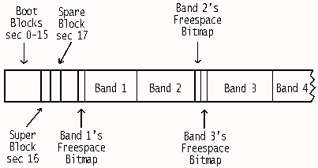

This article originally appeared in the February 1996 issue of Significant Bits, the monthly magazine of the Brisbug PC User Group Inc.
It is sad to think that most OS/2 users are not using HPFS. The main reason is that unless you own the commercial program Partition Magic, switching to HPFS involves a destructive reformat and that most users couldn't be bothered (at least initially). Another reason is user ignorance of the numerous technical advantages of using HPFS.
This month we start a series that delves into the structures that make up OS/2's HPFS. It is very difficult to get any public information on it aside from what appeared in an article written by Ray Duncan in the September '89 issue of Microsoft Systems Journal, Vol 4 No 5. I suspect that the IBM-Microsoft marriage break-up that occurred in 1991 may have caused an embargo on further HPFS information. I've been searching books and the Internet for more than a year looking for information with very little success. You usually end up finding a superficial description without any detailed discussion of the internal layout of its structures.
There are three commercial utilities that I've found very useful. SEDIT from the GammaTech Utilities v3 is a wonder. It decodes quite a bit of the information in HPFS' structures. HPFSINFO and HPFSVIEW from the Graham Utilities are also good. HPFSINFO lists information gleaned from HPFS' SuperBlock and SpareBlock sectors, while HPFSVIEW provides the best visual display I've seen of the layout of a HPFS partition. You can receive some information on a sector by clicking on it. HPFSVIEW is also freely available in the demo version of the Graham Utilities, GULITE.xxx. I've also written a REXX program to assist with cross-referencing locations between SEDIT & HPFSVIEW and to provide a convenient means of dumping a sector.
Probably the most useful program around at the moment is freeware, FST03F.xxx (File System Tool) written by Eberhard Mattes. This provides lots of information and comes with source. Even if you aren't a C programmer (I'm not) you can learn much from its definition of structures. Unfortunately I wrote the first three instalments without seeing this information so that made the task more difficult.
In the early stages I've had to employ a very laborious process in an attempt to learn more. I created the smallest OS/2 HPFS partition possible (1 MB). Then I created/altered a file or directory and compared the changes. Sometimes I knew where the changes would occur so I could just compare the two sectors but often I ended up comparing two 1 MB image files looking for differences and then translated the location in the image into C/H/S (a physical address in Cylinder/Head/Sector format) or LSN (Logical Sector Number). While more information will be presented in this series than I've seen in the public domain, there are still things that I've been unable to decipher.
For me, the most disappointing feature of Win 95 is the preservation of the FAT (File Allocation Table) system. It's now known as VFAT but aside from integrated 32-bit file and disk access, the structure on the disk is basically the same as DOS v4 (circa 1988). An ungainly method involving the volume label file attribute was used to graft long filename support onto the file system. These engineering compromises were made to most easily achieve backward compatibility. It's a pity because Microsoft has an excellent file system available in NT, namely NTFS. This file system is very robust although perhaps NTFS is overkill for the small user.
The Program Manager graphical user interface (GUI) appeared in OS/2 v1.1 in 1988. The sophisticated High-Performance File System came with OS/2 v1.2 which was released way back in 1989! The powerful REXX scripting language showed up in OS/2 v1.3 (1991). And the largely object-orientated WPS (Work Place Shell) GUI appeared in 1992 in OS/2 v2.0. So it is hardly surprising that experienced OS/2 users were not swept up in the general hysteria about Windows 95 being the latest and greatest.
A positive aspect of the Win 95 craze has been that the minimum system requirement of 8 MB RAM, 486/33 makes a good platform for OS/2 Warp. So now the disgruntled Win 95 user will find switching OSs less daunting, at least from a hardware viewpoint.
I've never used Dual Boot because it seems so limiting. I've always reformatted and installed Boot manager so that I could select from up to four different Operating Systems, for example OS/2 v2.1, OS/2 Warp Connect (peer-to-peer networking with TCP/IP and Internet support), IBM DOS v7 and Linux.
In previous OS/2 installations, I've left a small (50 MB) FAT partition that could be seen when I booted under either DOS or OS/2, while the rest of the HD space (910 MB) was formatted as HPFS. Recently I upgraded to Warp Connect and this time I dropped FAT and the separate DOS boot partition completely. This does not mean I am unable to run DOS programs. OS/2 has inbuilt IBM DOS v5 and you can install boot images of other versions of DOS, or even CP/M, for near instantaneous booting of these versions. There is no reason why you can't have multiple flavours of DOS running at the same time as you're running multiple OS/2 sessions. Furthermore DOS programs have no problems reading from, writing to or running programs on HPFS partitions even though the layout is nothing like FAT. It's all handled transparently by OS/2. But this does mean you have to have booted OS/2 first. HPFS is not visible if you use either Dual Boot or Boot Manager to boot directly to DOS, but there are a number of shareware programs around to allow read-access to HPFS drives from DOS.
DOS uses the system BIOS to access the hard disk. This is limited to dealing with a HD that has no more than 1,024 cylinders due to 10 bits (2^10 = 1,024) being used in the BIOS for cylinder numbering. OS/2 uses the system BIOS at boot time but then completely replaces it in memory with a special Advanced BIOS. This means that the boot partition and, if you use it, Boot Manager's 1 MB partition, must be within the first 1,024 cylinders. Once you've booted OS/2, however, you can access partitions on cylinders past the Cyl 1023 point (counting from zero) without having to worry about LBA (Logical Block Addressing) translation schemes.
Now this can still catch you out if you boot DOS. On my old system I'd sometimes use Boot Manager to boot a native DOS version. I'd load AMOS (a shareware program) to see the HPFS drives. I thought there must have been a bug in AMOS because I could only see half of F: and none of G: until I realised that these partitions were situated on a third HD that had 1,335 cylinders. So this was just the effect of DOS' 1,024 cylinder limitation which the AMOS program was unable to circumvent.
Most new OS/2 users select the "Easy Installation" option. This is satisfactory but it only utilises FAT, installs OS/2 on the same drive as DOS and Windows, does not reformat the partition and Dual Boot is installed.
If you know what you're doing or are more aggressive in wanting to take advantage of what OS/2 can provide then the "Advanced Installation" option is for you. Selecting it enables you to selectively install parts of OS/2, install OS/2 in a primary or logical (extended) partition other than C: or even on a 2nd HD (I don't know whether you can install on higher physical drives than the 2nd one in a SCSI multi-drive setup); the option of installing Boot Manager is provided; you can use HPFS if you wish; installation can occur on a blank HD.
CHKDSK on a HPFS partition can recover from much more severe faults than it can on a FAT system. This is because the cluster linkages in a FAT system are one-way, pointing to the next cluster in the chain. If the link is broken it is usually impossible to work out where the lost clusters ("x lost clusters in y chains") should be reattached. Often they are just artifacts of a program's use of temporary files that haven't been cleaned up properly. But "file truncated" and "cross-linked files" messages are usually an indication of more serious FAT problems.
HPFS uses double linking: the allocation block of a directory or file points back to its predecessor ("parent") as well as to the next element ("child"). Moreover, major structures contain dword (32-bit) signatures identifying their role and each file/directory's FNODE contains the first 15 characters of its name. So blind scanning can be performed by CHKDSK or other utilities to rebuild much of the system after a significant problem.
As a personal comment, I've been using HPFS since April, 1993, and I've yet to experience any serious file system problems. I've had many OS/2 lockups while downloading with a DOS comms program and until recently I was running a 4 MB hardware disk cache with delayed writes, yet, aside from the lost download file, the file system has not been permanently corrupted.
Warp, by default, does a quick format when you format a HD under either FAT or HPFS. So FORMAT /FS:HPFS x:, which is what the installation program performs if you decide to format the disk with HPFS, is performed very quickly. It's almost instantaneous if you decide to reformat with FAT (/FS:FAT). Now this speed differential does not mean that FAT is much quicker, only that FORMAT has very little work to perform during a quick FAT reformat since the FAT structures are so simple compared to HPFS.
As mentioned earlier, CHKDSK has extended recovery abilities when dealing with HPFS. It has four levels of /F:n checking/recovery. These will be considered in greater detail in a later article in this series when we look at fault tolerance. The default of CHKDSK /F is equivalent to using /F:2. If you decide to use /F:3 then CHKDSK will dig deep and recover information that existed on the partition prior to the reformatting providing that it was previously formatted as HPFS. Using CHKDSK /F:3 after performing a quick format on a partition that was previously FAT but is now HPFS will not cause this, since none of the previous data has HPFS signature words embedded at the beginning of its sectors. However, if you ever use /F:3 after quickly reformatting a HPFS partition you could end up with a bit of a mess since everything would be recovered that existed on the old partition and which hadn't been overwritten by the current contents.
To guard against this, OS/2 stores whether or not a quick format has been performed on a HPFS partition in bit 5 (counting from zero) of byte 08h in LSN (Logical Sector Number) 17, the SpareBlock sector. This particular byte is known as the Partition Status byte, with 20h indicating that a quick format was performed. Bit 0 of this byte is also used to indicate whether the partition is "clean" or "dirty" so 21h indicates that the partition was quick formatted and is currently "dirty" (these concepts will be covered in a later instalment).
If you attempt to perform a CHKDSK /F:3 on a quick-formatted partition, you will receive the following warning:
SYS0641: Using CHKDSK /F:3 on this drive may cause files that existed before the last FORMAT to be recovered. Proceed with CHKDSK (Y/N)?
If you type "HELP 641" for further information you'll see:
EXPLANATION: The target drive was formatted in "fast format" mode, which does not erase all data areas. CHKDSK /F:3 searches data areas for "lost" files. If a file existed on this drive before the last format, CHKDSK may find it, and attempt to recover it.
ACTION: Use CHKDSK /F:2 to check this drive. If you use /F:3, be aware that files recovered to the FOUND directories may be old files. Also, if you format a drive using FORMAT /L, FORMAT will completely erase all old files, and avoid this warning.
It seems a pity to forego the power of the CHKDSK /F:3 in the future. As is suggested, FORMAT /L (for "Long" I presume) will completely obliterate the prior partition's contents, but you can't specify this during a reinstall. To perform it you need to use FORMAT /L on the partition before reinstalling. For this to be practical you will probably need to keep OS/2 and nothing else on a separate partition and to have a recent tape backup of the remaining volumes' contents. Note: in my opinion keeping OS/2 on a separate partition is the best way of laying out a system but make sure you leave enough room for things like extra postscript fonts and programs that insist on putting things on C:.
Figure 1 shows a table comparing the capacity of OS/2's FAT and HPFS file systems. The difference in the logical drive numbers arises due to A: and B: being assigned to floppies which are always FAT. It would be ridiculous to put a complex, relatively large file system, which was designed to overcome FAT's limitations with big partitions, on volumes as small as current FDs.
FAT HPFS
Logical drives 26 24
Num of Partitions 16 16
Max Partition Size 2 GB 64 GB
Max File Size 2 GB 2 GB
Sector Size 512 bytes 512 bytes
Cluster/Block Size 0.5 KB-32 K 512 bytes
Fig.1 Comparing the capacity of FAT and HPFS
The next point of interest is the much greater partition size supported by HPFS. HPFS has a maximum possible partition size of about 2,200 GB (2^21 sectors) but is restricted in the current implementation to 64 GB. (Note: older references state that the maximum is 512 GB.) I don't know what imposes this limitation. Note: the effective limitation on partition size is currently around 8 GB. This is due to CHKDSK's inability to handle a larger partition. I presume this limitation will be rectified soon as ultra large HDs will become common in the next year or two.
The 2 GB maximum filesize limit is common to DOS, OS/2 and 32-bit Unix. A 32-bit file size should be able to span a range of 4 GB (2^32) but the DosSetFilePtr API function requires that the highest bit be used for indicating sign (forward or backward direction of movement), leaving 31 for size.
The cluster size on a 1.4 MB FD is 512 bytes. For a 100 MB HD formatted with FAT it is 2 KB. Due to the relatively small 64K (2^16) limit on cluster numbering, as FAT partitions get bigger the size of clusters must also increase. So for a 1-2 GB partition you end up with whopping 32 KB clusters. Since the average wastage of HD space due to the cluster size is half a cluster per file, storing 10,000 files on such a partition will typically waste 160 MB (10,000 * 32 KB / 2).
HPFS has no such limitation. File space is allocated in sector-sized blocks unlike the FAT system. A FNODE sector is also always associated with each file. So for 10,000 files, the wastage due to sector size is typically 2.5 MB (10,000 * 512 / 2) for the files themselves + 5 MB consumed by the file's FNODEs = 7.5 MB. And this overhead is constant whether the HPFS partition is 10 MB or 100 GB.
This must be balanced against the diskspace consumed by HPFS. Since HPFS is a sophisticated file system that is designed to accomplish a lot more than FAT, it correspondingly requires more diskspace than FAT. Figure 2 illustrates this. You may think that 10 MB for the file system is too much for a 1,000 MB partition but you should consider this as a percentage.
System Usage including Disk Space available Allocation Unit
MBR track to user + Fnode for HPFS
FAT/HPFS in KB FAT/HPFS in % FAT/HPFS in KB
10 MB 44/415 99.57/95.95 4/0.5+0.5
100 MB 76/3,195 99.77/96.88 2/0.5+0.5
1000 MB 289(est)/10,430 99.98(est)/98.98 16/0.5+0.5
Fig. 2: Space used by FAT and HPFS on different volumes
Furthermore, once cluster size wastage is also considered, then the break-even point (as regards diskspace) for a 1,000 MB partition is about 2,200 files which isn't very many files. This is based on a 16 KB cluster size. In the 1,024-2,047 MB partition size range the cluster size increases to 32 KB so the "crossover" point shifts to only 1,100 files.
I had to calculate the 1,000 MB FAT partition values since OS/2 wouldn't let me have a FAT partition situated in the greater than Cyl 1023 region. The 4 KB cluster size of the 10 MB partition is not a misprint. Below 16 MB, a 12-bit FAT scheme (1.5 bytes in the FAT representing 1 cluster) is used instead of a 16-bit one.
Consider an extreme case: FAT system on a full partition which has a maximum-sized FAT (64K entries - this is the maximum number of files a FAT disk can hold). The size of such a partition would be 128 MB, 256 MB, 512 MB, 1 GB or 2 GB, depending on cluster size. Each FAT is 128 KB in size. (There is a second FAT which mirrors the first.) In this example all the files are in one subdirectory. This can't be in the root directory because it only has space for 512 entries. (With HPFS you can have as many files as you want in the root directory.) 64 K of entries in a FAT directory requires 2 MB of diskspace (64K * 32 bytes/directory entry). To find a file, on average, 32 K directory entries would need to be searched. To say that a file was not on the disk, the full 64 K entries must be scanned before the "File not found" message was shown. The same figures would apply in you were using a file-finding utility to look for a file in 1,024 directories, each containing 63 files (the subdirectory entry also consumes space).
If the directory entries were always sorted, the situation would greatly improve. Assuming you had a quick means of getting to the file in the sorted sequence, if it's the file you're looking for then you've found its directory entry (and thus its starting cluster's address). If a file greater in the sequence than the required file is found instead then you immediately know that the file does not exist.
HPFS stores directory files in a balanced multi-branch tree structure (B-tree) which is always sorted due to the way the branches are assigned. This can lead to some extra HD activity, caused by adjustment of the tree structure, when a new file is added or a file is renamed. This is done to keep the tree balanced i.e. the total length of each branch from the root to the leaves is the same. The extra work when writing to the disk is hidden from the user by the use of "lazy writes" (delayed write caching).
HPFS directory entries are stored in contiguous directory blocks of four sectors i.e. 2 KB known as DIRBLKs. A lot of information is stored in each variable-length (unlike FAT) file entry in a DIRBLK structure, namely:
At the end of the sector there is extra ("flex") space available for special purposes.
If the average size of the filenames is 10-13 characters, then a directory block can store 44 of them (11 entries/sector). A two-level B-tree arrangement can store 1,980 entries (1 * 44-entry directory root block + 44 directory leaf blocks * 44 entries/block) while a three-level structure could accommodate 87,164 files (the number of files in the two-level tree + 1,936 third-level directory leaf blocks * 44 entries/block). So the 64 K of directory entries in our example can be searched in a maximum of 3 "hits" (disk accesses). The term "maximum" was used because it depends on what level the filename in question is stored in the B-tree structure and what's in the disk cache.
Adding files to a directory containing many files (say 500+) under FAT becomes an exasperating affair. I've often experienced this because a DOS program we've installed on hundreds of our customer's machines has 648 files in a sub-sub-subdirectory. Watching the archive unpack on a machine without disk caching is bad news and it still slows down noticeably on machines with large SMARTDRIVE caches.
Figure 3 shows a simple REXX program you can create to investigate this phenomenon while Figure 4 tables some results. The program creates a large number of zero-length files in a directory. Perform this test in a subdirectory to overcome FAT's restriction on a maximum of 512 entries in the root directory. Reformating and rebooting was performed before each test to ensure consistent conditions. With both FAT and HPFS, a 1,536 KB lazy-writing cache with a maximum cacheable read/write size of 8 KB was used. Note 1: with HPFS, a "zero-length" file consumes diskspace because there is always a FNODE sector associated with a file/directory, regardless of the file's contents. So 1,000 empty files consume 500 KB of space. Note 2: there is a timing slop of about 0.1 seconds due to the 55 msec timer tick uncertainty affecting both the start time and stop time values.
/* Create or open a large number of empty files in a directory */
CALL Time 'R' /* Reset timer */
DO x = 1 TO 1000
CALL STREAM 'file'||x, 'c', 'open' /* Will create if not exist */
CALL STREAM 'file'||x, 'c', 'close'
END
SAY Time('E') /* Report elapsed time */
Fig 3: A REXX program to assess the directory searching and file
creation speeds of FAT and HPFS.
Number of Files in a Directory
125 250 500 1000 2000 4000 4001
->4100
FAT 1.7 3.4 8.0 23.4 99.4 468.4 26.6
FAT (LW) 0.7 1.7 5.1 17.9 89.6 447.3 26.1
HPFS 7.4 14.7 30.7 62.9 129.0 262.6 7.5
HPFS (LW) 0.5 1.0 2.2 4.5 9.0 18.3 0.5
Fig 4: Timing results of the program in Figure 3. The beneficial effect
of lazy writing on performance is clearly demonstrated. Tests were
performed in an initially empty subdirectory except for the last one
which adds 100 new files to a subdirectory already containing 4,000
files.
To investigate further, the full data set was plotted on a graph with logarithmic axes. Examine Figure 5. As you can see, HPFS' performance is reasonably linear (in y = a*x^b + c, b was actually 1.1) while FAT's performance appears to follow a third-order polynomial (y = a*x^3 + b*x^2 + c*x + d). It is apparent that FAT's write caching becomes less effective when many files are in a directory presumably because much time is being spent sifting through the FAT in memory. (Disk access was only occurring briefly about once a second based on the flashing of the HD light). HPFS' performance was dramatically improved in this test by the use of write caching. Again, disk access was about once a second (due to CACHE's /MAXAGE:1000 parameter). While, typically, most disk access will involve reading rather than writing, this graph shows how effective lazy writing is at hiding the extra work from the user. It is also apparent that HPFS handles large numbers of files well. We now turn to examining how this improvement is achieved.
Fig. 5: Log-log graph comparing file system performance creating test files in a subdirectory. Extra data points shown. Number of files was increased using a cube-root-of-2 multiple. (Click for large version.)
Subdirectories on a FAT disk are usually splattered all around it. Similarly, entries in a subdirectory may not all be in contiguous sectors on the disk. Searching a FAT system's directory structure can involve a large amount of HD seeking back and forth, i.e. more time. Sure, you can use a defragger option to move all the directories to the front of the disk, but this usually takes a lot of time to reshuffle everything and the next time you create a new subdirectory or add files to an existing subdirectory there will be no free space up the front so directory separation and fragmentation will occur again.
HPFS takes a much better approach. On typical partitions (i.e. not very small ones) a directory band, containing many DIRBLKs, is placed at or near the seek centre (half the maximum cylinder number). On a 100 MB test partition the directory band starts at Cyl 48 (counting from 0) of a volume that spans 100 cylinders. Here 1,980 contiguous Directory sectors (just under 1 MB) were situated. Assuming 11 entries per Directory sector (44 entries per DIRBLK), this means that the first 21,780 directory entries will be next to each other. So if a blind file search needs to be performed this can be done with just 1 or 2 long disk reads (assuming <20,000 files and 1-2 MB disk cache). The maximum size of the contiguous directory band appears to be 8,000 KB for about 176,000 entries with 13-character names. Once the directory band is completely full new Directory sectors are scattered throughout the partition but still in four-sector DIRBLKs.
Another important aspect of HPFS' directory band is its location. By being situated near the seek centre rather than at the very beginning (as in FAT), the average distance that the heads must traverse, when moving between files and directories, is halved. Of course, with lazy writing, traversals to frequently update a directory entry while writing to a temporary file, would be much reduced anyway.
HPFS expends a lot of effort to keep a file either in one piece if possible or otherwise within a minimum number of pieces and close together on the disk so it can be retrieved in the minimum number of reads (remembering also that cache read-ahead can take in more than one nearby piece in the same read). Also, the seek distance, and hence time required to access extra pieces, is kept to an absolute minimum. The main design philosophy of HPFS is that mechanical head movement is a very time-consuming operation in CPU terms. So it is worthwhile doing more work looking for a good spot on the disk to place the file. There are many aspects to this and I'm sure there are plenty of nuances of which I'm ignorant.
Files are stored in 8 MB contiguous runs of sectors known as data bands. Each data band has a four-sector (2 KB) freespace bitmap situated at either the band's beginning or end. Consecutive data bands have tail-to-head placement of the freespace bitmaps so that maximum contiguous filespace is 16 MB (actually 16,380 KB due to the presence of the bitmaps within the adjoining band). See Figure 6.

Fig. 6: The basic data layout of an HPFS volume
Near the start of the partition there is a list of the sectors where each of the freespace bitmaps commences. I'm sure that this small list would be kept loaded into memory for performance reasons. Having two small back-to-back bitmaps adjoining a combined 16 MB data band is advantageous when HPFS is looking for the size of each freespace region within bands, prior to allocating a large file. But it does mean that a fair number of seeks to different bitmaps might need to be performed on a well-filled disk, in search of a contiguous space. Or perhaps these bitmaps are also kept memory resident if the disk is not too big.
A 2 GB file would be split into approximately 128 chunks of 16 MB, but these chunks are right after each other (allowing for the presence of the intervening 4 KB of back-to-back freespace bitmaps). So to refer to this file as "fragmented", while technically correct, would be misleading.
As mentioned earlier, every file has an associated FNODE, usually right before the start of the file. The number of pieces a file is stored in are referred to as extents. A "zero-length" file has 0 extents; a contiguous file has 1 extent; a file of 2-8 extents is "nearly" contiguous (the extents should be close together).
An FNODE sector contains:
A run can be up to 16 MB (back-to-back data bands) in size. If the file is too big or more fragmented than can be described in 8 extents, then an ALNODE (allocation block) is pointed to from the FNODE. In this case the FNODE structure changes so that it now contains up to 12 ALNODE pointers within the FNODE and each ALNODE can then point to either 40 direct sector runs (extents) or to 60 further ALNODEs, and each of these lower-level ALNODEs could point to either... and so on.
If ALNODEs are involved then a modified balanced tree structure called a B+tree is used with the file's FNODE forming the root of the structure. So only a two-level B+tree would be required to completely describe a 2 GB (or smaller) file if it consists of less than 480 runs (12 ALNODEs * 40 direct runs described in each ALNODE). Otherwise a 3-level structure would have no problems since it can handle up to 28,800 runs (12 ALNODEs * 60 further ALNODEs * 40 direct runs). It's difficult to imagine a situation where a four or higher level B+tree would ever be needed.
Consider how much disk activity would be required to work out the layout of a 2 GB file under FAT and under HPFS. With FAT the full 128 KB of the FAT must be read to determine the file's layout. If this layout can be kept in the cache during the file access then fine. Otherwise the FAT would need to be reread one or more times (probably starting from the beginning on each reread). With HPFS, up to 361 sector reads, in a three-level B+tree structure, and possibly up to just 13 sector reads, in a two-level structure, would provide the information. The HPFS figures are maximums and the actual sector-read figure would most probably be much lower since HPFS was trying hard to reduce the number of runs when the file was written. Also if the ALNODEs are near each other then read-ahead would reduce the actual hits. Furthermore, OS/2 will keep the file's allocation information resident in memory while the file is open, so no rereads would be needed.
If you've ever looked at the layout of files on a HPFS partition, you may have been shocked to see the large gaps in the disk usage. This is FAT-coloured thinking. There are good reasons not to use the first available spot next to an existing file, particularly in a multitasking environment where more than one write operation can be occurring concurrently. HPFS uses three strategies here that I'm aware of. First, the destination of write operations involving new files will tend not to be near (preferably in a different band from) where an existing file is also being updated. Otherwise, fragmentation would be highly likely to occur.
Second, 4 KB of extra space is allocated by the file system to the end of a file when it is created. Again the reason is to reduce the likelihood of fragmentation from other concurrent writing tasks. If not utilised, this space is recovered afterwards. To test this assertion, create the REXX cmdfile shown in Figure 7 and run it on an empty HPFS partition. (You can also do this on a partition with files in it but it is easier on an empty one.) Run it and when the "Press any key" message appears start up another OS/2 session and run CHKDSK (no switches) on the partition under examination. CHKDSK will get confused about the space allotted to the file open in the other session and will say it is correcting an allocation error (which it really isn't doing because you did not use the /F switch). Ignore this and notice that "4 kilobytes are in 1 user files". Switch back to the other session and press Enter to close the file. Repeat and again run CHKDSK in the other session. Notice this time that no extra space is allocated since the file is being reopened rather than being created.
/* Test to check the space preallocated to an open file */ CALL STREAM 'zerofile', 'c', 'open' /* Will create if it does not exist */ '@pause' CALL STREAM 'zerofile', 'c', 'close'Fig. 7: A simple REXX program to demonstrate how HPFS allocates 4 KB of diskspace to a new file.
Third, if a program has been written to report the likely filesize to OS/2, or if you are copying an existing file (i.e. the final filesize is known) then HPFS will expend a great deal of effort to find a free space big enough to accommodate the file in one extent. If that is not possible then it looks for two free spaces half the size of the file and so on. Again this can result in two files in a directory not being next to each other on the disk.
Since DOS and Windows programs are not written with preallocation space requesting in mind, they tend to be more likely candidates for fragmentation than properly written OS/2 programs. So, for example, using a DOS comms program to download a large file will often result in a fragmented file. Compared with FAT, though, fragmentation on heavily used HPFS volumes is very low, usually less than 1%. We'll consider fragmentation levels in more depth in Part 3.
It has also been written that the HPFS cache is smart enough to adjust the value of its sector read-ahead for each opened file based on the file's usage history or its type (Ray Duncan, 1989). It is claimed that EXE files and files that typically have been fully read in the past are given big read-aheads when next loaded. This is a fascinating concept but unfortunately it has not been implemented.
Surprisingly, like other device drivers, HPFS is still 16-bit code. I think this is one of the few remaining areas of 16-bit code in Warp. I believe IBM's argument is that 32-bit code here would not help performance much as mechanical factors are the ones imposing the limits, at least in typical single-user scenarios.
HPFS is run as a ring 3 task in the 80x86 processor protection mechanism i.e. at the application level. HPFS386 is a 32-bit version of HPFS that comes only with IBM LAN SERVER Advanced Version. HPFS386 runs in ring 0, i.e. at kernel level. This ensures the highest file system performance in demanding network situations. It can also provide much bigger caches than standard HPFS which is limited to 2 MB. There is a chance that this version will appear in a later release of Warp.
OS/2 v2.x onwards also boosts the performance of FAT. This improvement, called "Super FAT", is a combination of 32-bit executable code and the mirroring of the FAT and directory paths in RAM. This requires a fair bit of memory. Also Super FAT speeds the search for free space by representing in memory in a bitmap used sectors in the FAT. This does help the performance but I think the results in Figure 4, which were performed using the Super FAT system, still highlight FAT's architectural weaknesses.
You can easily tell whether a partition is formatted under HPFS or FAT. Just run DIR in the root directory. If "." and ".." directory entries are shown then HPFS is used [Unless the HPFS partition was formatted under Warp 4 -- Ed].
HPFS does require 300-400 KB of memory to implement, so it's only suitable for OS/2 v2.1 systems with at least 12 MB or Warp systems with at least 8 MB. For partitions of 100 MB+ it offers definite technical advantages over FAT. By now you should have developed an understanding of how these improvements are achieved.
In the next installment, we look at a shareware program to visually inspect the layout of a HPFS partition and a REXX program to dump the contents of a disk sector by specifying either decimal LSN, hexadecimal LSN, dword byte-order-reversed hexadecimal LSN (what you see when you look at a dword pointer in a hex dump) or Cyl/Hd/Sec coordinates. Other REXX programs will convert the data stored in the SuperBlock and the SpareBlock sectors into intelligible values. You should find it quite informative.